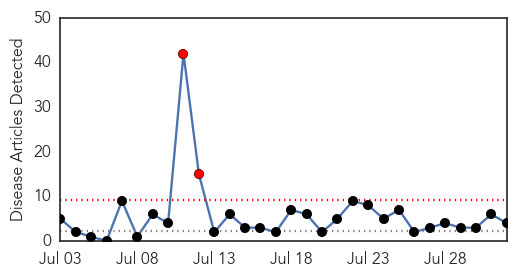
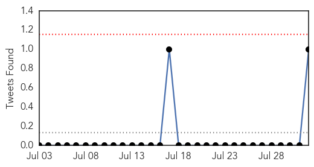
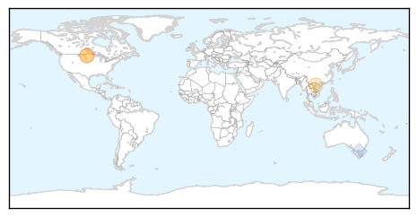
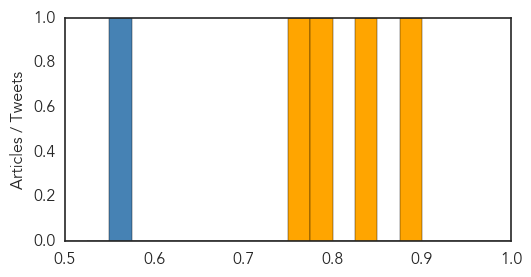

Influenza
30-Day Web Trend
2 alerts, 0 warnings

30-Day Twitter Trend
0 alerts, 0 warnings

Article Locations
Article Confidences
Top Articles:
Top Tweets:
- 0.565
- Flu Fact Friday: Adults 65 years of age and older who contract seasonal influenza are much more likely to experience serious complications.
Measles
30-Day Web Trend
1 alerts, 0 warnings
30-Day Twitter Trend
0 alerts, 0 warnings

Article Locations

Article Confidences

Top Articles:
-
No articles found for Aug 01, 2014
Top Tweets:
-
No tweets found for Aug 01, 2014